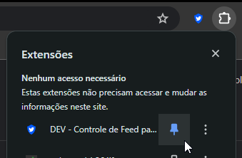

Bem Vindo!
Esta extensão te permite personalizar a experiência no Twitter facilmente, você pode usar o Ícone da Extensão acima para acessar suas configurações. Simples assim!
Entre em Contato:
Discord
Meu Twitter
Doe via PIX
Selecione a opção de Extensões acima, e sem seguida Fixe a Extensão para poder acessa-la rápidamente!

clique para fechar